Cloud NGFW Deployment
Architecture overviews and deployment guides for Cloud NGFW as a managed firewall service on AWS and Azure
Understanding Security Zones
In traditional PAN-OS firewalls (PA-Series, VM-Series), every physical or logical interface is bound to a security zone: trust, untrust, dmz, and so on. Security policy rules then specify zone pairs (e.g., trust → untrust) to control which traffic is allowed. This 1:1 interface-to-zone binding is a foundational concept that PS engineers and customers carry into cloud deployments.
Cloud NGFW breaks this model. Because Cloud NGFW is a fully managed service with no customer-visible interfaces, there are no interfaces to bind zones to. How zones are handled (and whether they exist at all) depends entirely on the cloud platform and management mode.
Traditional PAN-OS zones vs Cloud NGFW, where the interface-to-zone binding disappears in the cloud:
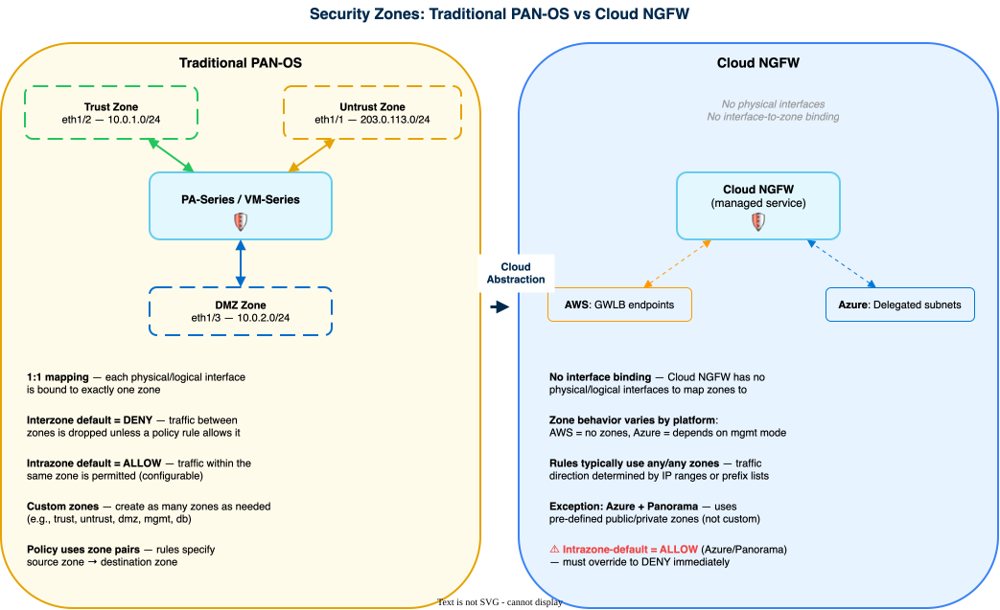
Zone Behavior by Platform
The table below is the single most important reference for understanding zones in Cloud NGFW. Each platform handles zones differently; there is no universal behavior.
| Aspect | Traditional PAN-OS | AWS | Azure (Panorama) | Azure (SCM) | Azure Native Rulestack |
|---|---|---|---|---|---|
| Zone model | Custom zones bound to interfaces | No zones | 2 pre-defined: public, private |
Zones exist but hidden | Single implicit zone |
| Source/Dest zone in rules | Specific zone names | any / any |
Zone names (public, private) |
any / any |
ANY / ANY |
| Traffic differentiation | Zone pairs | IP address ranges | Zone pairs + addresses | Address objects | Prefix lists, FQDN lists |
| Custom zones | Unlimited | N/A | No — only public and private |
N/A | N/A |
| Intrazone default | Allow (configurable) | N/A | Allow (must override!) | N/A | N/A |
| Interzone default | Deny | N/A | Deny | N/A | N/A |
| Zones in logs | Yes | No | Yes (public/private) |
Yes (public/private) |
May show public/private |
When managing Cloud NGFW for Azure through Panorama, east-west traffic (private → private) is intrazone traffic. The default intrazone rule is ALLOW, meaning all spoke-to-spoke traffic passes without inspection unless you explicitly override it.
Immediately after deploying Cloud NGFW with Panorama management, change the intrazone-default action to DENY in the Panorama security policy. Without this override, your east-west segmentation is not enforced.
This does not apply to AWS (no zones), Azure SCM (any/any rules), or Azure Native Rulestack (ANY/ANY rules); in those modes, all traffic is matched by explicit policy rules.
The zone model depends on the underlying data plane architecture:
- AWS uses GWLB (Gateway Load Balancer) — all traffic enters through a single GWLB endpoint, so there is no directional interface to bind a zone to. All rules use
any/anyzones. - Azure (Panorama/SCM) uses delegated subnets — traffic enters through a
publicsubnet or aprivatesubnet, giving the firewall two natural zone assignments. Panorama exposes these as zone names; SCM abstracts them toany. - Azure Native Rulestack uses the same delegated subnet model, but the native rulestack policy engine does not expose zone fields — all rules match
ANY/ANY.
Zone behavior by platform, showing how each Cloud NGFW deployment handles source and destination zones in security rules:
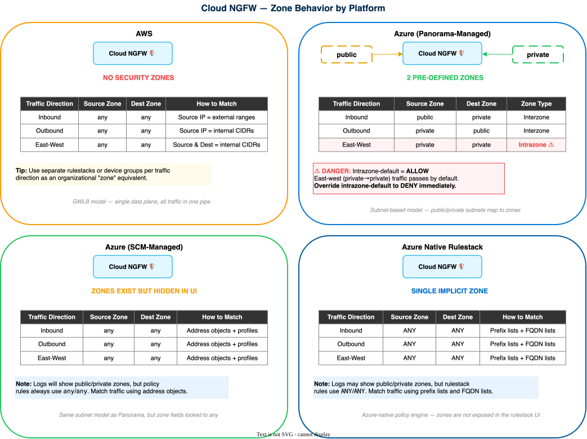
Architecture Overview
Cloud NGFW for AWS is a Palo Alto Networks next-generation firewall delivered as a fully managed, cloud-native service. Palo Alto Networks owns and operates the underlying firewall infrastructure (including scaling, patching, and high availability) while you retain full control over security policy. Traffic reaches the Cloud NGFW through NGFW endpoints (AWS Gateway Load Balancer endpoints) that you place in your VPC subnets and reference in VPC route tables.
Security Zones on AWS
Cloud NGFW for AWS has no security zone concept. Because traffic reaches the Cloud NGFW through GWLB endpoints (a single data plane tunnel), there is no interface-to-zone binding. All security rules must use any for both source and destination zones.
| Traffic Direction | Source Zone | Dest Zone | How to Match |
|---|---|---|---|
| Inbound | any | any | Source IP = external/public ranges |
| Outbound | any | any | Source IP = internal VPC CIDRs |
| East-West | any | any | Source & Dest = different internal CIDRs |
Without zones, use separate rulestacks or device groups per traffic direction (inbound, outbound, east-west) as an organizational equivalent. Within each rulestack, use IP address ranges and address groups to distinguish traffic flows. This replaces the zone-pair logic from traditional PAN-OS.
Five deployment models exist. Each balances control, complexity, and blast radius differently. Expand the model that matches your environment to study the architecture and traffic flows.
- Combined — Best for most environments. Centralizes east-west and outbound inspection in a security VPC via TGW, while distributing inbound inspection via cross-account NGFW endpoints in each spoke VPC. Start here if unsure.
- Centralized — All traffic flows (inbound, outbound, east-west) route through a central security VPC via TGW. Simplifies management but requires an internet-facing ELB in the security VPC for inbound traffic.
- Distributed — Each VPC has its own Cloud NGFW. No TGW required. Simplest to deploy but does not inspect inter-VPC (east-west) traffic across VPCs.
- Isolated — Cloud NGFW shared across multiple standalone VPCs via cross-account endpoints. No TGW. Good for independent VPCs that do not need east-west connectivity.
- Cloud WAN — Replaces TGW with AWS Cloud WAN for global, multi-region connectivity. Use when Cloud WAN is already your backbone.
Key Concepts
Availability Zone mapping is account-specific. AWS maps AZ names (e.g., us-east-1a) to physical AZ IDs (e.g., use1-az1) independently per account. This means us-east-1a in Account A may correspond to a different physical data center than us-east-1a in Account B. When deploying cross-account NGFW endpoints, always use AZ IDs, not AZ names, to ensure endpoints and workloads share the same physical AZ and avoid cross-AZ data transfer charges.
AZ name-to-ID mapping varies per AWS account:

Cross-account endpoint sharing. In the Combined and Isolated models, Cloud NGFW runs in a dedicated security account while NGFW endpoints are placed in spoke VPCs that may reside in separate AWS accounts. The Cloud NGFW resource owner shares the GWLB service via AWS PrivateLink, and spoke account administrators create GWLB endpoints referencing the shared service name.
Multi-account architecture with Cloud NGFW in a security account and cross-account endpoints in spoke VPCs:

The Combined model uses a hub-and-spoke topology with AWS Transit Gateway at the center. East-west and outbound traffic routes through a centralized security VPC, while inbound traffic enters each spoke VPC directly and is inspected by cross-account NGFW endpoints before reaching application workloads.
This model deploys two logical Cloud NGFW resources:
- An East-West & Outbound NGFW in the centralized security VPC — inspects all inter-VPC and internet-bound traffic.
- An Inbound NGFW with cross-account endpoints placed in each spoke VPC — inspects traffic arriving from the internet before it reaches the application load balancer.
Combined Design high-level architecture:

Key Components
| Component | Location | Purpose |
|---|---|---|
| Transit Gateway | Central hub | Interconnects all VPCs; routes east-west and outbound traffic to security VPC |
| Security VPC | Dedicated VPC (10.107.0.0/16) | Hosts NGFW endpoints, NAT gateway, and IGW for outbound |
| Spoke VPCs | App01 (10.104.0.0/16), App02 (10.105.0.0/16) | Host application workloads, ELBs, and inbound NGFW endpoints |
| NGFW Endpoints (security VPC) | One per AZ in security VPC | GWLB endpoints for east-west and outbound inspection |
| NGFW Endpoints (spoke VPCs) | One per AZ in each spoke VPC | Cross-account GWLB endpoints for inbound inspection |
| NAT Gateway | One per AZ in security VPC | Translates private IPs to public EIPs for outbound traffic |
TGW Route Table Design
Two TGW route tables isolate traffic domains:
| Route Table | Associated Attachments | Key Routes |
|---|---|---|
| Spokes | App01, App02 | 0.0.0.0/0 → Security VPC attachment |
| Security | Security-EW-Outbound | Propagated routes from all spoke VPCs |
Enable Appliance Mode on the security VPC TGW attachment. Without it, return traffic may cross AZ boundaries and break flow symmetry, causing packet drops.
Inbound Traffic Flow (Combined)
- Client sends a request to the application's public DNS name. DNS resolves to the EIP of the internet-facing ELB in the spoke VPC.
- The IGW edge association route table directs traffic to the inbound NGFW endpoint in the ELB's AZ.
- The NGFW endpoint tunnels traffic via GWLB to the Inbound Cloud NGFW for inspection.
- If allowed, the NGFW returns the packet to the NGFW endpoint.
- The NGFW endpoint subnet route table forwards traffic to the ELB's private IP.
- The ELB distributes the request to healthy EC2 targets.
Combined inbound traffic flow:

Combined inbound return path:

Outbound Traffic Flow (Combined)
- An instance in a spoke VPC sends traffic to the internet. The instance subnet route table directs it to the TGW attachment.
- The TGW spokes route table matches the default route and forwards to the security VPC attachment.
- The TGW subnet route table in the security VPC forwards to the NGFW endpoint in the same AZ.
- The NGFW endpoint tunnels traffic to the East-West & Outbound Cloud NGFW for inspection.
- If allowed, the NGFW returns the packet to the NGFW endpoint.
- The NGFW endpoint subnet route table forwards internet-bound traffic to the NAT gateway.
- The NAT gateway translates the source IP to its public EIP.
- The IGW sends the packet to the internet.
Combined outbound traffic flow:

Combined outbound return path:

East-West Traffic Flow (Combined)
- An instance in App01 VPC sends traffic to an instance in App02 VPC. The instance subnet route table directs it to the TGW attachment.
- The TGW spokes route table forwards to the security VPC attachment (no direct spoke-to-spoke routes exist).
- The TGW subnet route table in the security VPC forwards to the NGFW endpoint.
- The NGFW endpoint tunnels traffic to the East-West & Outbound Cloud NGFW for inspection.
- If allowed, the NGFW returns the packet to the NGFW endpoint.
- The NGFW endpoint subnet route table matches the App02 CIDR and forwards to the TGW attachment.
- The TGW security route table forwards to the App02 VPC attachment.
- The TGW attachment in App02 delivers the packet to the destination instance.
Combined east-west traffic flow:

Combined east-west return path:

Route Tables (Combined Model)
Spoke VPC Route Tables (App01 shown; App02 identical):
| Route Table | Destination | Target |
|---|---|---|
| App01 Instance Subnet | 0.0.0.0/0 | TGW |
| App01 ELB-a Subnet | 0.0.0.0/0 | GWLBE-a (inbound) |
| App01 ELB-b Subnet | 0.0.0.0/0 | GWLBE-b (inbound) |
| App01 GWLBE Subnet | 0.0.0.0/0 | IGW |
| App01 IGW (edge assoc.) | 10.104.7.0/24 | GWLBE-a |
| App01 IGW (edge assoc.) | 10.104.8.0/24 | GWLBE-b |
Security VPC Route Tables:
| Route Table | Destination | Target |
|---|---|---|
| TGW-a Subnet | 0.0.0.0/0 | GWLBE-a |
| TGW-a Subnet | 10.0.0.0/8 | GWLBE-a |
| GWLBE-a Subnet | 0.0.0.0/0 | NATGW-a |
| GWLBE-a Subnet | 10.0.0.0/8 | TGW |
| NATGW-a Subnet | 0.0.0.0/0 | IGW |
| NATGW-a Subnet | 10.0.0.0/8 | GWLBE-a |
AZ-b route tables mirror AZ-a with corresponding -b endpoints.
Combined Design complete architecture with all route tables and endpoints:

Combined Design TGW attachments and route table associations:

Confirm understanding of the Combined model before proceeding. The security VPC handles east-west and outbound traffic via TGW. Each spoke VPC handles its own inbound traffic via cross-account NGFW endpoints. Two separate Cloud NGFW resources are deployed.
The Centralized model routes all traffic flows (inbound, outbound, and east-west) through dedicated security VPCs connected via Transit Gateway. No NGFW endpoints are placed in spoke VPCs.
This model deploys two security VPCs:
- An East-West & Outbound Security VPC with NGFW endpoints, NAT gateways, and IGW.
- A Centralized Inbound Security VPC with NGFW endpoints and an internet-facing ELB that accepts all inbound traffic.
Centralized Design high-level architecture:

When to Use Centralized
- Regulatory requirements mandate that inbound traffic is inspected outside the application VPC.
- A single ingress point is preferred for all applications.
- Fewer Cloud NGFW resources to manage (one per traffic direction, not one per spoke).
TGW Route Tables
Three TGW route tables are used:
| Route Table | Associated Attachments | Key Routes |
|---|---|---|
| Spokes | App01, App02 | 0.0.0.0/0 → EW&O Security VPC; 10.106.0.0/16 → Inbound Security VPC |
| EW&O Security | Security-EW-Outbound | Propagated routes from all spokes + self |
| Inbound Security | Inbound Security VPC | Propagated routes from all spokes + self |
Inbound Traffic Flow (Centralized)
- Client sends a request to the application's public DNS name. DNS resolves to the EIP of the internet-facing ELB in the inbound security VPC.
- The ELB listener selects a target from the target group (private IPs in spoke VPCs) and forwards the request.
- The ELB subnet route table directs traffic to the NGFW endpoint.
- The NGFW endpoint tunnels traffic to the Inbound Cloud NGFW for inspection.
- If allowed, the NGFW returns the packet to the NGFW endpoint.
- The NGFW endpoint subnet route table forwards to the TGW attachment.
- The TGW inbound security route table forwards to the spoke VPC attachment.
- The spoke VPC TGW attachment delivers the packet to the instance or internal ELB.
Centralized inbound traffic flow:

Centralized inbound return path:

Centralized inbound inspection supports only TCP traffic with IP address targets in the ELB target group. UDP-based or non-ELB inbound workloads require the Combined model instead.
Outbound and east-west traffic flows are identical to the Combined model; they route through the centralized East-West & Outbound security VPC via TGW.
Centralized outbound traffic flow:

Centralized outbound return path:

Centralized east-west traffic flow:

Centralized east-west return path:

Centralized Design complete architecture with all route tables and endpoints:

Centralized Design TGW attachments and route table associations:

Confirm the distinction: in the Centralized model, inbound traffic enters at the security VPC's ELB, not at the spoke VPC. The Combined model's inbound traffic enters at each spoke VPC's own IGW and ELB.
In the Distributed model, each VPC that requires protection deploys its own NGFW endpoints. No Transit Gateway is required. This is the simplest model to deploy but does not provide cross-VPC (east-west) inspection between separate VPCs.
Three traffic patterns are supported within a single VPC:
Distributed East-West (Intra-VPC)
Traffic between subnets within the same VPC routes through NGFW endpoints placed in a firewall subnet. Subnet route tables direct inter-subnet traffic to the endpoint.
- Traffic from the source subnet routes to the NGFW endpoint.
- The NGFW endpoint tunnels traffic to the Cloud NGFW for inspection.
- If allowed, the NGFW returns the packet to the NGFW endpoint, which delivers it to the destination subnet.
Distributed Outbound
Outbound internet traffic from a private subnet routes through the NGFW endpoint before reaching the NAT gateway and IGW.
- Traffic from the private subnet routes to the NGFW endpoint.
- The NGFW inspects and, if allowed, returns traffic to the NGFW endpoint.
- The firewall subnet route table forwards to the NAT gateway.
- The NAT gateway forwards through the IGW to the internet.
Distributed Inbound
Inbound traffic from the internet enters via the IGW, hits the NGFW endpoint (via IGW edge association route table), is inspected, then forwarded to an ALB and ultimately to application instances.
- Traffic arrives at the IGW, which routes to the NGFW endpoint.
- The NGFW inspects and, if allowed, returns traffic to the NGFW endpoint.
- The endpoint routes to the ALB, which forwards to application targets.
The Distributed model is per-VPC, no-TGW. Each protected VPC has its own NGFW and endpoints. East-west inspection is intra-VPC only (between subnets), not between separate VPCs.
The Isolated model shares a single Cloud NGFW resource across multiple standalone VPCs using cross-account NGFW endpoints, without a Transit Gateway. Each VPC operates independently with its own IGW, NAT gateway, and NGFW endpoints.
This model is ideal when:
- VPCs do not need east-west connectivity between each other.
- Consolidating NGFW resources reduces cost and management overhead.
- VPCs span multiple AWS accounts but share a common Cloud NGFW tenant.
Isolated Inbound Flow
- The IGW forwards traffic to the ALB.
- The ALB subnet route table directs target-group traffic to the inbound NGFW endpoint.
- The NGFW inspects and, if allowed, returns traffic to the endpoint.
- The firewall subnet route table delivers traffic to the application instances.
Isolated Outbound Flow
- EC2 instance traffic routes to the egress NGFW endpoint.
- The NGFW inspects and, if allowed, returns traffic to the endpoint.
- The firewall subnet route table forwards to the NAT gateway.
- The NAT gateway sends through the IGW to the internet.
The Isolated model has no TGW and no east-west traffic between VPCs. Each VPC has its own endpoints pointing to a shared Cloud NGFW resource. Separate inbound and outbound NGFW endpoints may reside in different firewall subnets.
AWS Cloud WAN replaces Transit Gateway as the network backbone. VPCs attach directly to a Cloud WAN core network organized into segments (e.g., ProdSegment, SecuritySegment). The security VPC containing the Cloud NGFW attaches to the security segment, and routing policies steer traffic through it.
Cloud NGFW should be deployed in every AWS region that the Cloud WAN spans to maintain low-latency inspection and regional cost optimization.
Deployment Approaches
- Federated TGW + Cloud WAN — Replace TGW peering with Cloud WAN while keeping existing TGW attachments. Use this when migrating from TGW.
- Cloud WAN only — All VPCs connect directly to Cloud WAN. TGW is removed entirely.
East-West Packet Walkthrough (Cloud WAN)
- App VPC 1 sends traffic to App VPC 2. The VPC route table has a default route to the Cloud WAN Core Network ARN.
- The core network performs a prod segment route table lookup. The default route points to the security VPC attachment.
- Traffic arrives at the security VPC's Cloud WAN subnet. The route table forwards to the NGFW endpoint.
- The NGFW inspects the traffic. If allowed, it returns to the NGFW endpoint.
- The firewall subnet route table has a default route back to the Core Network ARN.
- The core network performs a security segment route table lookup. The App VPC 2 CIDR matches a static route, and traffic forwards to App VPC 2.
- App VPC 2 receives the traffic via its Cloud WAN subnet.
- TGW-to-Cloud-WAN peering is supported only within the same region, not across regions.
- The Cloud WAN core network ASN must differ from any TGW ASNs in the same environment.
- Enable appliance mode on the security VPC attachment to maintain flow symmetry.
Cloud WAN replaces TGW as the hub. VPC route tables point to a Core Network ARN instead of a TGW ENI. Segment route tables and sharing policies control which traffic reaches the security VPC for inspection.
Ready to deploy on AWS?
The full AWS guide covers prerequisites, Panorama/SCM management setup, Terraform configuration, deployment, spoke VPC onboarding, and post-deployment verification.
Open Full AWS Guide →Architecture Overview
Cloud NGFW for Azure is a Palo Alto Networks next-generation firewall delivered as a fully managed, cloud-native Azure service (FWaaS). There is no firewall infrastructure to deploy, patch, or scale: Palo Alto Networks manages the underlying compute, and the Cloud NGFW resource scales automatically based on subnet sizing, up to 100 Gbps per resource with appropriately sized subnets.
Cloud NGFW for Azure supports multi-region deployments. Each Cloud NGFW resource is deployed within a specific Azure region with built-in high availability. For multi-region protection, deploy a separate Cloud NGFW resource in each region.
Multi-region deployment, with Cloud NGFW spanning availability zones within each region:
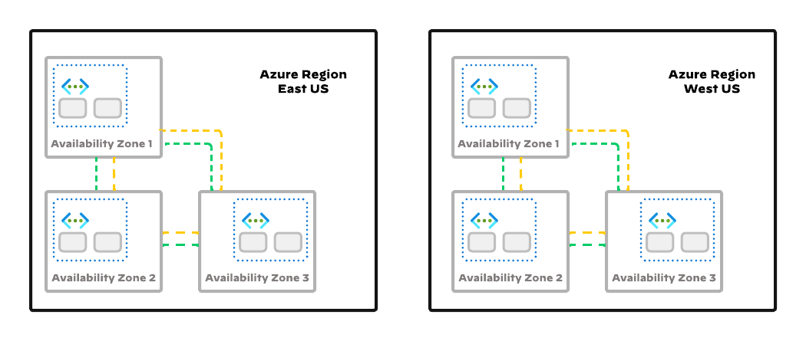
Security Zones on Azure
Azure Cloud NGFW uses delegated subnets (public and private) that provide a natural two-zone model. However, whether you can use these zones in security rules depends on the management mode.
Panorama-Managed
When Cloud NGFW for Azure is managed through Panorama, the firewall exposes two pre-defined zones: public and private. These map directly to the two delegated subnets. You cannot create custom zones; only public and private are available.
| Traffic Direction | Source Zone | Dest Zone | Zone Type |
|---|---|---|---|
| Inbound (internet → spoke) | public | private | Interzone |
| Outbound (spoke → internet) | private | public | Interzone |
| East-West (spoke → spoke) | private | private | Intrazone |
East-west traffic (private → private) is intrazone. PAN-OS defaults intrazone to ALLOW. This means all spoke-to-spoke traffic passes without inspection after deployment unless you change this immediately.
In Panorama: Policies → Security → Default Rules → intrazone-default → Action: Deny. Push the change to the Cloud NGFW device group.
SCM-Managed
When managed through Strata Cloud Manager, security rules use any for both source and destination zones. The zone fields are not editable in the SCM UI. Traffic direction is determined by address objects: use source/destination address groups to distinguish inbound, outbound, and east-west flows.
Logs from SCM-managed Cloud NGFW will still show public/private zone names (the underlying firewall still has zones), but policy rules always use any/any.
Three deployment models exist. The right choice depends on the Azure networking topology and whether cross-VNet (east-west) inspection is required.
- Centralized VNet Hub-and-Spoke — traditional hub VNet with VNet peering to spoke VNets. Traffic steering uses User-Defined Routes (UDRs). Inspects all traffic types including east-west.
- Virtual WAN (vWAN) — Cloud NGFW deploys directly into a Virtual WAN hub as a SaaS NVA. Traffic steering uses routing intent policies. Inspects all traffic types including east-west.
- Distributed — each VNet gets its own dedicated Cloud NGFW instance. No hub, no peering. Simplest to deploy but does not inspect east-west traffic between VNets.
Cloud NGFW is deployed into a centralized hub VNet that contains two delegated subnets, public and private. Spoke VNets peer to the hub and use UDRs to steer traffic through the Cloud NGFW private IP for inspection.
Centralized VNet hub-and-spoke topology:
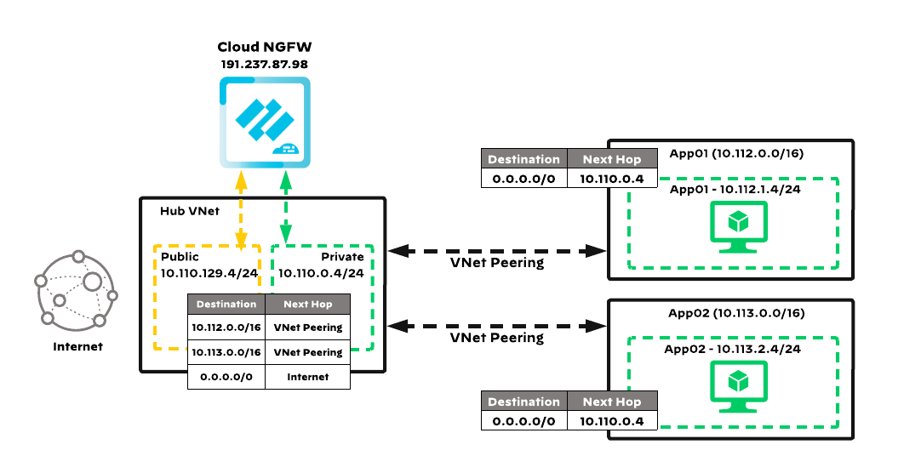
Hub VNet Requirements
- Minimum hub VNet size:
/25(128 addresses) - Two subnets, each minimum
/26(64 addresses): one public, one private - Both subnets must have subnet delegation enabled for
PaloAltoNetworks.Cloudngfw/firewalls - A public IP address associated with the Cloud NGFW for inbound and outbound internet traffic
Traffic Flows
Egress (spoke to internet):
- Workload VM in spoke VNet sends traffic destined for the internet.
- The spoke subnet's UDR (
0.0.0.0/0→ Cloud NGFW private IP) forwards traffic to the Cloud NGFW. - Cloud NGFW inspects the traffic against security policy.
- Cloud NGFW performs SNAT — translates the source from the spoke VM's private IP to the Cloud NGFW's public IP.
- Traffic egresses to the internet.
Egress traffic flow:
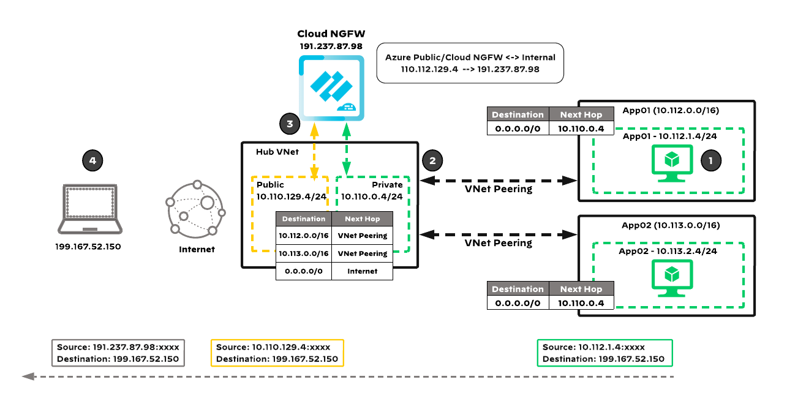
Ingress (internet to spoke):
- External client sends traffic to the Cloud NGFW's public IP.
- Cloud NGFW performs DNAT — translates the destination from the public IP to the spoke workload's private IP.
- Cloud NGFW performs SNAT — translates the source to its private subnet IP to ensure return traffic routes back through the firewall.
- Traffic traverses VNet peering to reach the spoke workload.
Ingress traffic flow:
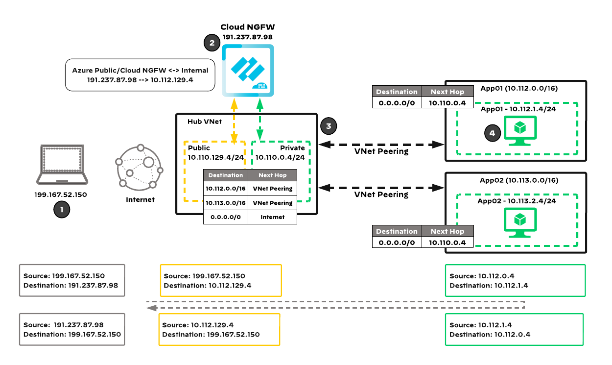
East-West (spoke to spoke):
- Workload VM in spoke A sends traffic to a workload in spoke B.
- The spoke subnet's UDR forwards traffic to the Cloud NGFW private IP.
- Cloud NGFW inspects the traffic against security policy.
- Traffic exits via the same private interface and traverses VNet peering to reach spoke B.
- No NAT is performed on east-west traffic.
East-west traffic flow:
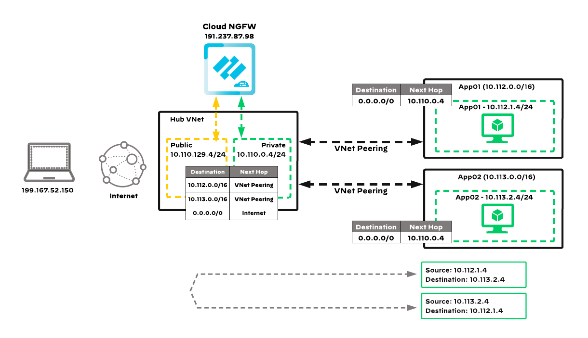
Ingress via Application Gateway:
- External client sends traffic to the Azure Application Gateway's frontend public IP.
- Application Gateway terminates the connection and forwards to its backend pool via the
app-gwsubnet. - A UDR on the Application Gateway subnet routes traffic to the Cloud NGFW private IP for inspection.
- Cloud NGFW inspects the traffic against security policy.
- Traffic traverses VNet peering to reach the backend workload in the spoke VNet.
- Return traffic from the spoke follows the UDR back through Cloud NGFW to the Application Gateway.
Ingress via Application Gateway traffic flow:
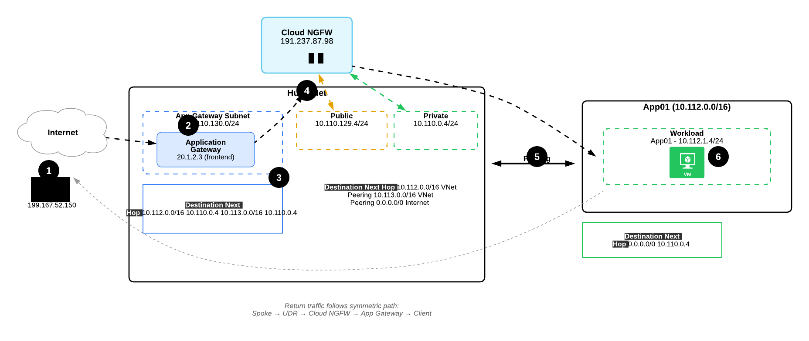
Cloud NGFW performs SNAT on all egress traffic and both SNAT + DNAT on ingress traffic. East-west traffic passes through without NAT translation. When using Application Gateway for ingress, DNAT is handled by the Application Gateway; Cloud NGFW inspects traffic in-line without performing NAT. DNAT rules for direct inbound access (without App Gateway) are configured in the Azure portal under the Cloud NGFW resource's Networking & NAT settings, not in Panorama or SCM.
Confirm you understand the Centralized VNet model before proceeding. All spoke traffic routes through UDRs to the Cloud NGFW in the hub VNet. Cloud NGFW performs SNAT on egress, DNAT + SNAT on ingress, and no NAT on east-west traffic. Application Gateway ingress uses a UDR on the App Gateway subnet to route through Cloud NGFW for inspection.
In the Virtual WAN model, Cloud NGFW deploys directly into an Azure Virtual WAN hub as a SaaS NVA. Spoke VNets connect to the vWAN hub via virtual network connections (not VNet peering). Traffic steering uses routing intent and routing policies instead of UDRs.
Virtual WAN architecture:
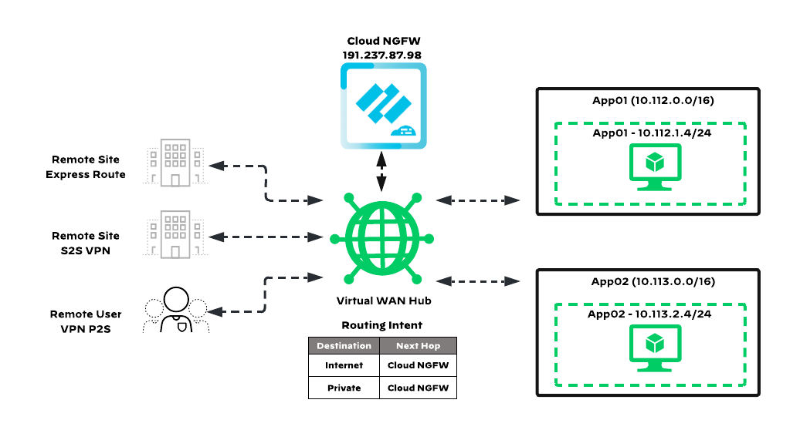
vWAN Traffic Flows
Egress (spoke to internet):
- A workload VM in a spoke VNet (e.g., App02 at
10.113.2.4) sends traffic to an internet destination. - The vWAN hub's routing intent policy (Internet → Cloud NGFW) directs the traffic to Cloud NGFW.
- Cloud NGFW inspects the traffic and performs SNAT — translating the source from the spoke VM's private IP to the Cloud NGFW's public IP (
198.51.100.98). - Traffic egresses to the internet destination.
vWAN egress traffic flow:
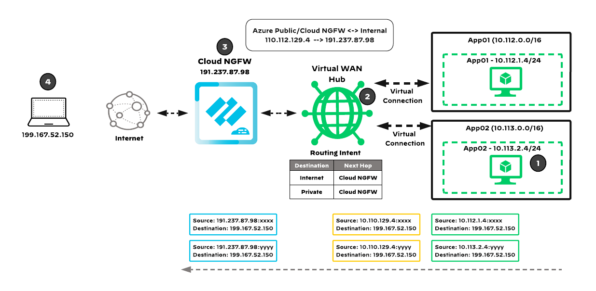
Ingress (internet to spoke):
- An external client sends traffic to the Cloud NGFW's public IP (
198.51.100.98). - Cloud NGFW performs DNAT — translating the destination to the spoke workload's private IP (e.g.,
10.112.1.4in App01) — and SNAT — translating the source to the Cloud NGFW's internal IP. - The vWAN hub forwards the traffic to the spoke VNet via the virtual network connection.
- Traffic arrives at the destination workload in the spoke VNet.
vWAN ingress traffic flow:
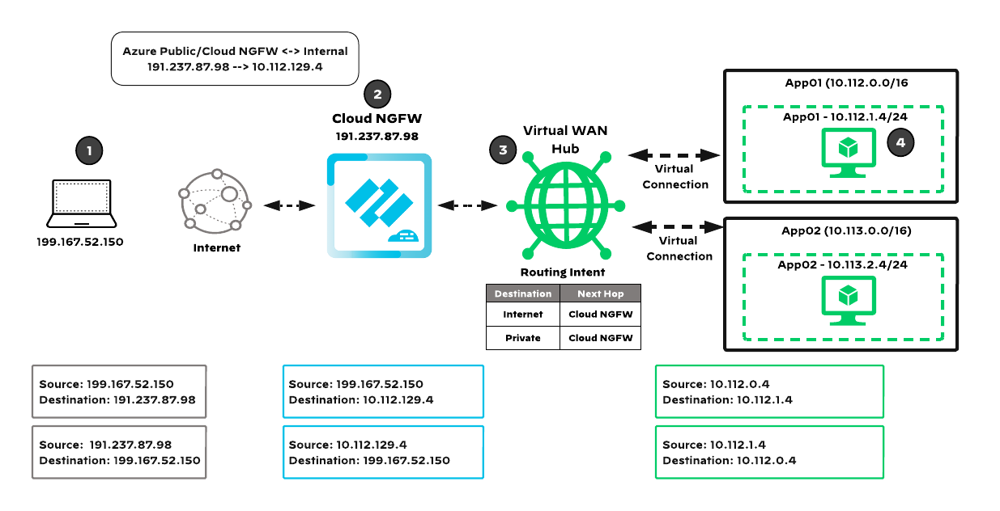
East-West (spoke to spoke):
- A workload in App01 (
10.112.1.4) sends traffic to a workload in App02 (10.113.2.4). - The vWAN hub's routing intent policy (Private → Cloud NGFW) directs the traffic to Cloud NGFW for inspection.
- Cloud NGFW inspects the traffic and returns it to the vWAN hub. No NAT is performed on east-west traffic.
- The vWAN hub forwards the traffic to the destination spoke VNet via the virtual network connection.
vWAN east-west traffic flow:
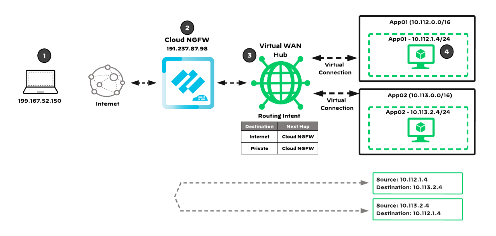
Ingress via Application Gateway (hub VNet):
- External client sends traffic to the Azure Application Gateway's frontend public IP. The Application Gateway resides in a separate VNet connected to the vWAN hub.
- Application Gateway terminates the connection and forwards to its backend pool.
- The vWAN hub's routing intent policy directs traffic from the Application Gateway VNet to Cloud NGFW for inspection.
- Cloud NGFW inspects the traffic and the vWAN hub forwards it to the destination spoke VNet.
vWAN ingress via Application Gateway traffic flow:
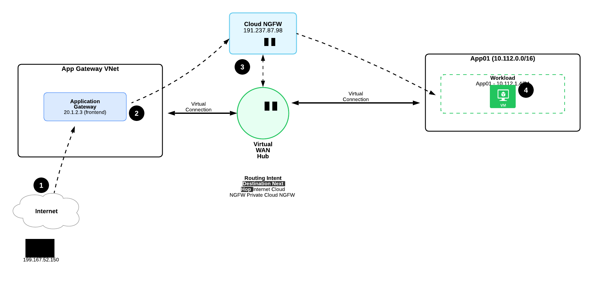
East-West: On-premises to cloud:
- On-premises client sends traffic via ExpressRoute or S2S VPN to the vWAN hub.
- The vWAN hub's routing intent policy (Private → Cloud NGFW) directs the traffic to Cloud NGFW for inspection.
- Cloud NGFW inspects the traffic and returns it to the vWAN hub.
- The vWAN hub forwards the traffic to the destination spoke VNet via the virtual network connection.
On-premises to cloud traffic flow:
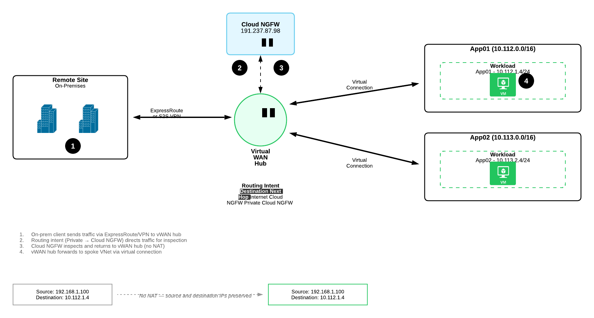
vWAN hub connectivity, with spoke VNets via virtual connections and branch sites via ExpressRoute, S2S VPN, and P2S VPN:
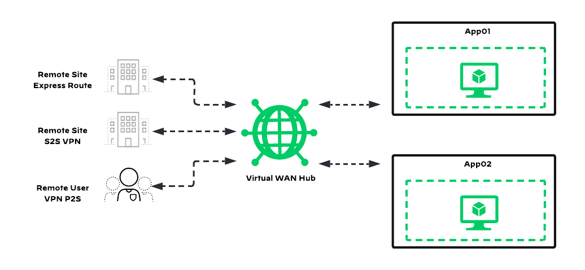
Alternative vWAN hub view showing VNets and branch connections:
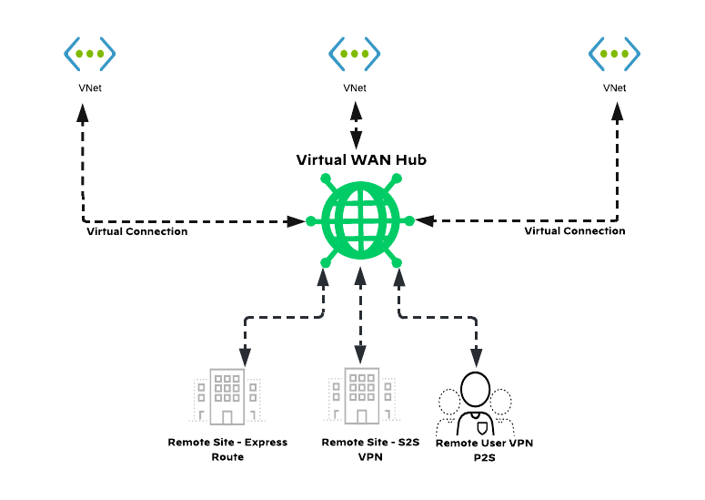
Transit VNet with VM-Series, for integrating VM-Series firewalls in a transit VNet alongside vWAN for branch connectivity:
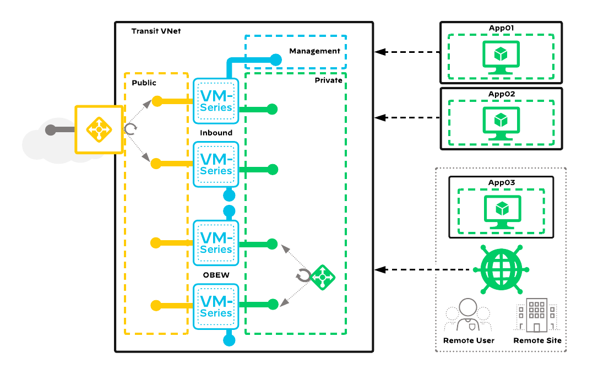
Detailed Transit VNet view with subnet addressing and interface assignments:
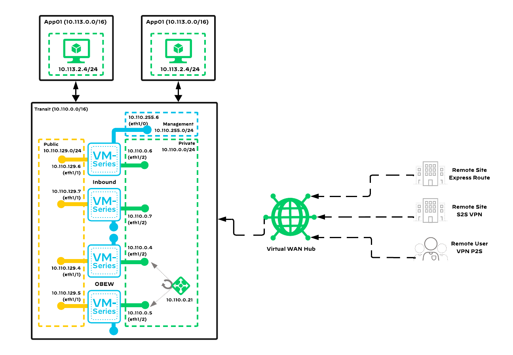
Multi-region vWAN, a hub-to-hub mesh with per-region spoke VNets and branch connectivity:
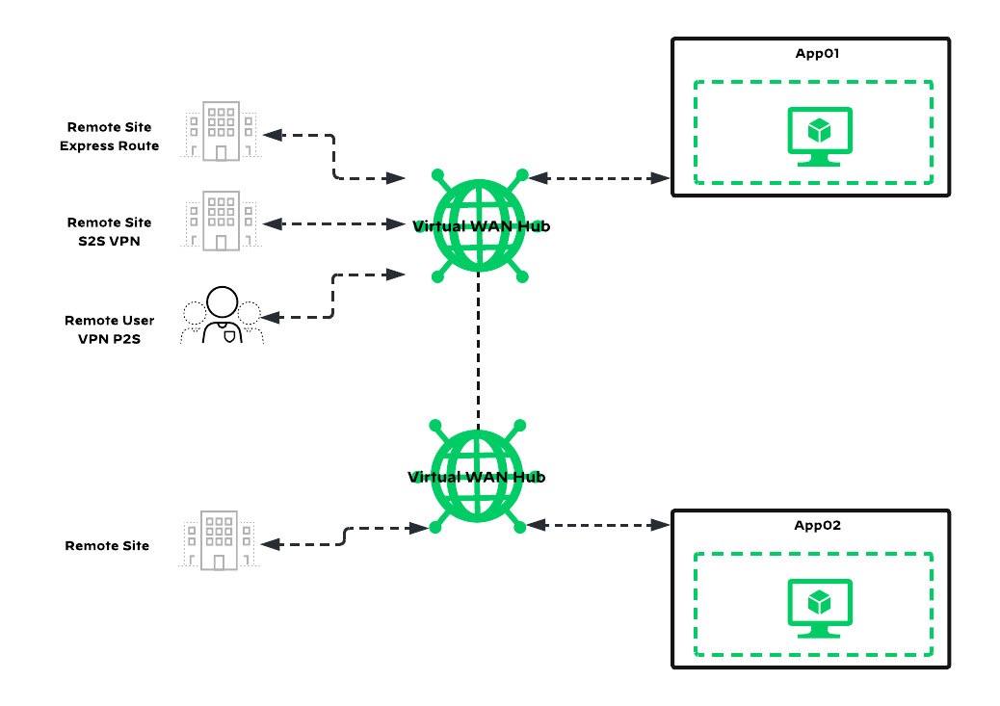
Key Differences from Centralized VNet
| Aspect | Centralized VNet | Virtual WAN | Distributed |
|---|---|---|---|
| Cloud NGFW placement | Hub VNet (customer-managed) | vWAN hub (Azure-managed) | Per-application VNet |
| Traffic steering | UDRs on spoke subnets | Routing intent policies on the vWAN hub | UDRs within each VNet |
| Spoke connectivity | VNet peering | Virtual network connections | None — VNets are isolated |
| East-west inspection | Yes | Yes | No |
| Branch/on-prem connectivity | Separate VPN gateway in hub VNet | Native vWAN S2S VPN, P2S VPN, ExpressRoute | Per-VNet VPN gateway (if needed) |
| Multi-region | Separate hub VNet per region | Hub-to-hub mesh with per-hub Cloud NGFW | Separate Cloud NGFW per VNet per region |
Confirm you understand the Virtual WAN model and how it differs from Centralized VNet. Cloud NGFW deploys as a SaaS NVA inside the vWAN hub; traffic steering uses routing intent policies, not UDRs. Spoke VNets connect via virtual network connections, not VNet peering. All five traffic flows (egress, ingress, east-west, App Gateway, on-prem) pass through Cloud NGFW for inspection.
In the Distributed model, each application VNet contains its own dedicated Cloud NGFW instance with public and private delegated subnets. VNets are not connected to each other; there is no hub, no peering, and no shared firewall. Each Cloud NGFW inspects only the traffic within its own VNet.
Distributed architecture with an independent Cloud NGFW per VNet:
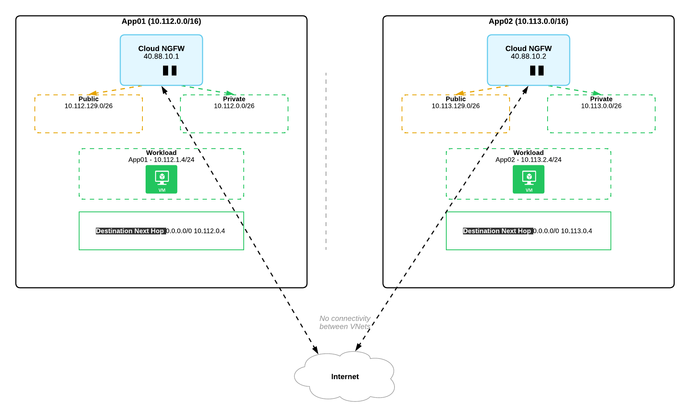
Per-VNet Requirements
- Each application VNet needs four subnets: public and private (delegated to Cloud NGFW, minimum
/26each), workload, and bastion (AzureBastionSubnet) - Each Cloud NGFW instance gets its own public IP for inbound DNAT and outbound SNAT
- UDR on the workload subnet routes
0.0.0.0/0to the local Cloud NGFW private IP
Traffic Flows
Egress (workload to internet):
- Workload VM sends traffic destined for the internet.
- The workload subnet's UDR (
0.0.0.0/0→ local Cloud NGFW private IP) forwards traffic to the Cloud NGFW within the same VNet. - Cloud NGFW inspects the traffic against security policy.
- Cloud NGFW performs SNAT — translates the source to this Cloud NGFW instance's public IP.
- Traffic egresses to the internet.
Distributed egress traffic flow:
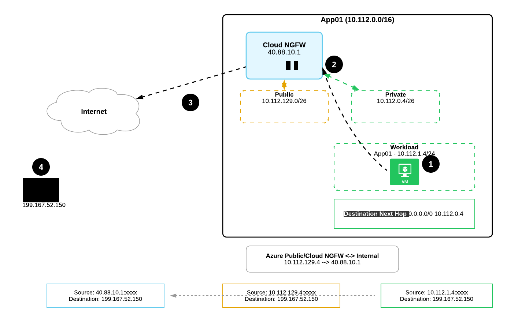
Ingress (internet to workload):
- External client sends traffic to this Cloud NGFW instance's public IP.
- Cloud NGFW performs DNAT — translates the destination to the workload's private IP within the same VNet.
- Cloud NGFW performs SNAT — translates the source to its private subnet IP to ensure return traffic routes back through the firewall.
- Traffic reaches the workload VM within the same VNet (no peering needed).
Distributed ingress traffic flow:
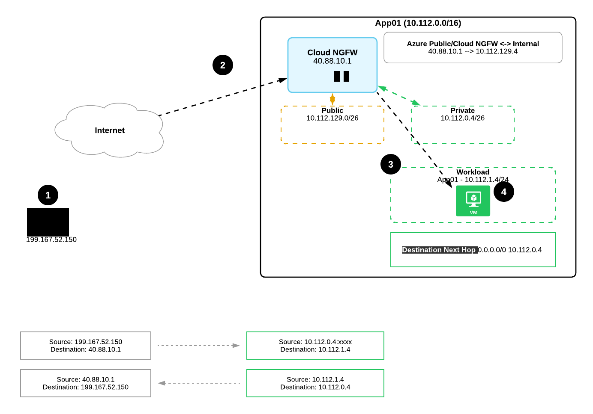
Because application VNets are isolated, there is no east-west traffic flow to inspect. If workloads in different VNets need to communicate securely, use the Centralized VNet or Virtual WAN model instead.
Confirm the Distributed model fits your use case. Each VNet gets its own Cloud NGFW instance; there is no hub, no peering, and no east-west inspection between VNets. Choose this model only when application VNets are truly isolated and do not need to communicate with each other.
Ready to deploy on Azure?
The full Azure guide covers prerequisites, Panorama/SCM management setup, Terraform configuration, deployment, spoke VNet onboarding, and post-deployment verification.
Open Full Azure Guide →Architecture Overview
Cloud NGFW for Azure with native rulestack provides a deploy-then-connect approach: infrastructure is provisioned through the Azure portal, and security policy is managed through Strata Cloud Manager (SCM). There is no requirement for Panorama or Terraform; the entire lifecycle is handled through Azure-native tools and the SCM web console.
This approach suits teams that want Azure-native infrastructure management (portal or ARM templates) with cloud-native security policy management through SCM. Zones and NAT stay in the Azure portal; security rules, address objects, and security profiles move to SCM.
The management boundary, showing what is managed where:
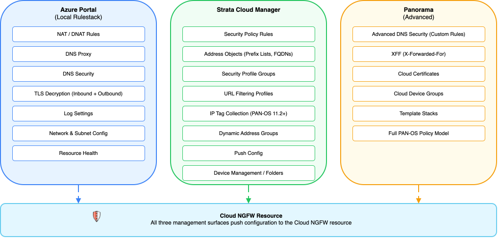
Security Zones on Azure Native Rulestack
Azure Native Rulestack uses a single implicit zone. The rulestack policy engine does not expose zone fields; all rules use ANY for source and destination zones. Traffic direction is determined by prefix lists and FQDN lists in the rule definition.
| Traffic Direction | Source Zone | Dest Zone | How to Match |
|---|---|---|---|
| Inbound | ANY | ANY | Source = external prefix list; Dest = internal prefix list |
| Outbound | ANY | ANY | Source = internal prefix list; Dest = FQDN list or external |
| East-West | ANY | ANY | Source & Dest = different internal prefix lists |
Even though rulestack rules use ANY/ANY, Cloud NGFW logs may still display public or private zone names. This reflects the underlying data plane behavior (the delegated subnets still have a directional nature) but it does not affect rule matching.
VNet Hub-and-Spoke
Cloud NGFW manifests as two private IP addresses (public-facing and private-facing) inside delegated subnets in the hub VNet. User-defined routes (UDRs) on spoke subnets steer traffic through these IPs for inspection.
VNet hub-and-spoke architecture, with Cloud NGFW in the hub VNet with delegated subnets and spoke VNets peered to the hub:
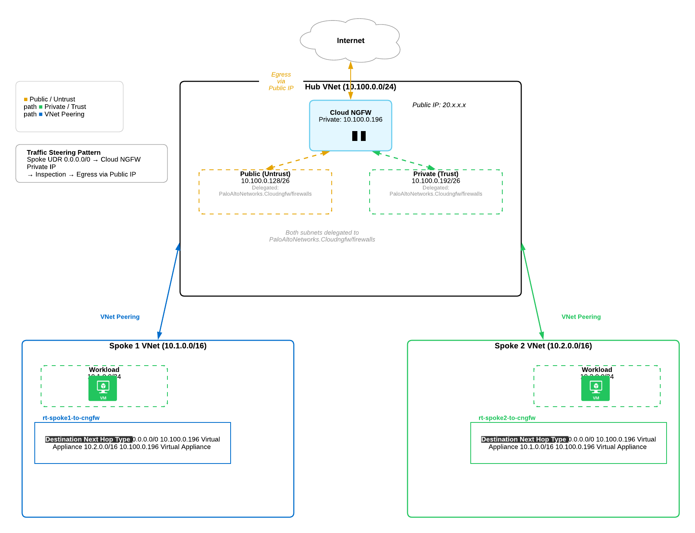
vWAN (Virtual Hub)
Cloud NGFW deploys as a SaaS NVA into the vWAN virtual hub. Routing intent programs routes automatically; no UDRs are required on spoke VNets. Hub address space determines throughput scaling capacity.
vWAN architecture with Cloud NGFW as a SaaS NVA in the virtual hub:
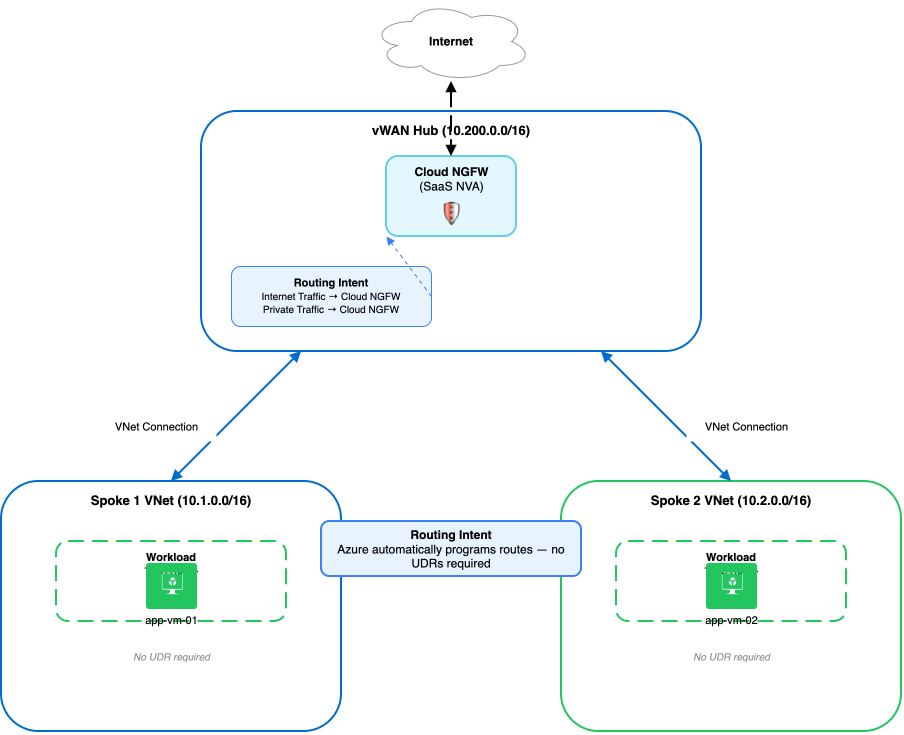
Key Differences from Panorama/SCM-Managed Cloud NGFW
| Aspect | Panorama/SCM Managed (Terraform) | Native Rulestack (Azure Portal + SCM) |
|---|---|---|
| Infrastructure provisioning | Terraform (SWFW modules) | Azure Portal / ARM templates |
| Management mode | panorama or scm | rulestack (local rulestack connected to SCM) |
| Security policy | Panorama device groups or SCM folders | SCM folders (via rulestack-to-tenant link) |
| NAT configuration | Terraform variables | Azure Portal |
| Lifecycle | Deploy infrastructure + policy together | Deploy infrastructure first, connect policy later |
| Best for | IaC-driven teams, multi-cloud consistency | Azure-native teams, portal-first workflows |
Ready to deploy with native rulestack?
The full Azure Native guide covers Azure portal deployment, network plumbing, SCM connection, security policy, NAT configuration, and end-to-end verification.
Open Full Azure Native Guide →